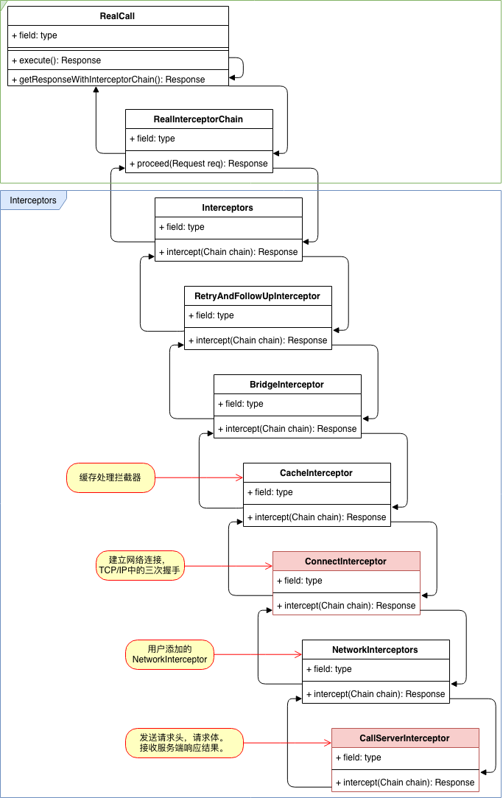

1. OkHttp拦截器Interceptor
/**
* 监听、修改发出的请求，或者接收到的响应，通常于添加、移除、转换Request或者Response的header。
*/
public interface Interceptor {
Response intercept(Chain chain) throws IOException;
}
使用以下代码发起一个网络请求。
Response response = client.newCall(request).execute();
OkHttpClient.newCall(request)方法创建一个RealCall对象。RealCall.execute()方法发起网络请求并获取返回结果。
@Override public Response execute() throws IOException {
// ...
timeout.enter();
try {
client.dispatcher().executed(this);
Response result = getResponseWithInterceptorChain(); // 使用InterceptorChain发起请求
return result;
} catch (IOException e) {
} finally {
client.dispatcher().finished(this);
}
}
Response getResponseWithInterceptorChain() throws IOException {
// Build a full stack of interceptors.
List<Interceptor> interceptors = new ArrayList<>();
interceptors.addAll(client.interceptors()); // 外部添加的Interceptor
interceptors.add(retryAndFollowUpInterceptor); // Retry，Redirect Interceptor
interceptors.add(new BridgeInterceptor(client.cookieJar())); // 生成请求参数,比如content-length
interceptors.add(new CacheInterceptor(client.internalCache())); // 缓存策略处理
interceptors.add(new ConnectInterceptor(client)); // 建立网络连接
if (!forWebSocket) { // 外部添加的NetworkInterceptor
interceptors.addAll(client.networkInterceptors());
}
interceptors.add(new CallServerInterceptor(forWebSocket)); // 发起网络请求
Interceptor.Chain chain = new RealInterceptorChain(interceptors, null, null, null, 0,
originalRequest, this, eventListener, client.connectTimeoutMillis(),
client.readTimeoutMillis(), client.writeTimeoutMillis());
// 通过interceptors的链式调用，获取到Response并返回。
return chain.proceed(originalRequest);
}
RealInterceptorChain.proceed方法，将当前Chain里面的interceptors列表从头开始一个一个取出Interceptor，然后执行该Interceptor的intercept方法获取Response，在不考虑缓存的情况下，该Response最终由最后一个CallServerInterceptor从网络上获取到数据后返回。
@Override public Response proceed(Request request) throws IOException {
return proceed(request, streamAllocation, httpCodec, connection);
}
public Response proceed(Request request, StreamAllocation streamAllocation, HttpCodec httpCodec, RealConnection connection) {
calls++;
// Call the next interceptor in the chain.
RealInterceptorChain next = new RealInterceptorChain(interceptors, streamAllocation, httpCodec,
connection, index + 1, request, call, eventListener, connectTimeout, readTimeout,
writeTimeout);
Interceptor interceptor = interceptors.get(index);
Response response = interceptor.intercept(next);
// ...
return response;
}
1.1. CallChain

1.2. RetryAndFollowUp
失败重试、重连、重定向处理拦截器。
/**
* This interceptor recovers from failures and follows redirects as necessary.
*/
public final class RetryAndFollowUpInterceptor implements Interceptor {
/**
* How many redirects and auth challenges should we attempt? Chrome follows 21 redirects; Firefox,
* curl, and wget follow 20; Safari follows 16; and HTTP/1.0 recommends 5.
*/
private static final int MAX_FOLLOW_UPS = 20;
public StreamAllocation streamAllocation() {
return streamAllocation;
}
@Override public Response intercept(Chain chain) throws IOException {
Request request = chain.request();
RealInterceptorChain realChain = (RealInterceptorChain) chain;
Call call = realChain.call();
EventListener eventListener = realChain.eventListener();
StreamAllocation streamAllocation = new StreamAllocation(client.connectionPool(),
createAddress(request.url()), call, eventListener, callStackTrace);
this.streamAllocation = streamAllocation;
int followUpCount = 0;
Response priorResponse = null;
while (true) {
if (canceled) {
streamAllocation.release();
throw new IOException("Canceled");
}
Response response;
boolean releaseConnection = true;
try {
response = realChain.proceed(request, streamAllocation, null, null);
releaseConnection = false;
// ...
该拦截器里面创建了StreamAllocation对象，并通过Chain传递到下一个拦截器BridgeInterceptor。
1.3. BridgeInterceptor
BridgeInterceptor根据请求的参数，生成Header之类的信息。
/**
* Bridges from application code to network code. First it builds a network request from a user
* request. Then it proceeds to call the network. Finally it builds a user response from the network
* response.
*/
public final class BridgeInterceptor implements Interceptor {
private final CookieJar cookieJar;
public BridgeInterceptor(CookieJar cookieJar) {
this.cookieJar = cookieJar;
}
@Override public Response intercept(Chain chain) throws IOException {
Request userRequest = chain.request();
Request.Builder requestBuilder = userRequest.newBuilder();
RequestBody body = userRequest.body();
if (body != null) {
MediaType contentType = body.contentType();
if (contentType != null) {
requestBuilder.header("Content-Type", contentType.toString());
}
long contentLength = body.contentLength();
if (contentLength != -1) {
requestBuilder.header("Content-Length", Long.toString(contentLength));
requestBuilder.removeHeader("Transfer-Encoding");
} else {
requestBuilder.header("Transfer-Encoding", "chunked");
requestBuilder.removeHeader("Content-Length");
}
}
// ...
Response networkResponse = chain.proceed(requestBuilder.build());
}
1.4. CacheInterceptor
缓存拦截器，根据请求参数判断是否使用缓存，以及在请求回来之后，把响应数据写入到缓存。
/** Serves requests from the cache and writes responses to the cache. */
public final class CacheInterceptor implements Interceptor {
final InternalCache cache;
@Override public Response intercept(Chain chain) throws IOException {
Response cacheCandidate = cache != null
? cache.get(chain.request())
: null;
long now = System.currentTimeMillis();
CacheStrategy strategy = new CacheStrategy.Factory(now, chain.request(), cacheCandidate).get();
Request networkRequest = strategy.networkRequest;
Response cacheResponse = strategy.cacheResponse;
// If we're forbidden from using the network and the cache is insufficient, fail.
// ...
// If we don't need the network, we're done.
if (networkRequest == null) {
return cacheResponse.newBuilder()
.cacheResponse(stripBody(cacheResponse))
.build(); // 如果networkRequest为空，则返回缓存的数据。
}
Response networkResponse = null;
try {
networkResponse = chain.proceed(networkRequest);
// ...
1.5. ConnectInterceptor
ConnectInterceptor用于建立一个连接到服务器网络的连接对象，也就是TCP/IP三次握手的过程。
/** Opens a connection to the target server and proceeds to the next interceptor. */
public final class ConnectInterceptor implements Interceptor {
public final OkHttpClient client;
public ConnectInterceptor(OkHttpClient client) {
this.client = client;
}
@Override public Response intercept(Chain chain) throws IOException {
RealInterceptorChain realChain = (RealInterceptorChain) chain;
Request request = realChain.request();
// 获取RetryAndFollowUpInterceptor里面的StreamAllocation
StreamAllocation streamAllocation = realChain.streamAllocation();
// We need the network to satisfy this request. Possibly for validating a conditional GET.
boolean doExtensiveHealthChecks = !request.method().equals("GET");
HttpCodec httpCodec = streamAllocation.newStream(client, chain, doExtensiveHealthChecks);
// 请求建立连接
RealConnection connection = streamAllocation.connection();
return realChain.proceed(request, streamAllocation, httpCodec, connection);
}
}
1.6. CallServerInterceptor
CallServerInterceptor是最后一个Interceptor，基于ConnectInterceptor建立的连接，发送请求头，请求体到服务器，等待服务器返回响应信息后，创建Response对象。
/** This is the last interceptor in the chain. It makes a network call to the server. */
public final class CallServerInterceptor implements Interceptor {
private final boolean forWebSocket;
public CallServerInterceptor(boolean forWebSocket) {
this.forWebSocket = forWebSocket;
}
@Override public Response intercept(Chain chain) throws IOException {
RealInterceptorChain realChain = (RealInterceptorChain) chain;
HttpCodec httpCodec = realChain.httpStream();
StreamAllocation streamAllocation = realChain.streamAllocation();
RealConnection connection = (RealConnection) realChain.connection();
Request request = realChain.request();
long sentRequestMillis = System.currentTimeMillis();
realChain.eventListener().requestHeadersStart(realChain.call());
httpCodec.writeRequestHeaders(request);
realChain.eventListener().requestHeadersEnd(realChain.call(), request);
Response.Builder responseBuilder = null;
// POST，PUT，DELETE 等请求，需要读取RequestBody。
if (HttpMethod.permitsRequestBody(request.method()) && request.body() != null) {
if (responseBuilder == null) {
// Write the request body if the "Expect: 100-continue" expectation was met.
realChain.eventListener().requestBodyStart(realChain.call());
long contentLength = request.body().contentLength();
CountingSink requestBodyOut =
new CountingSink(httpCodec.createRequestBody(request, contentLength));
BufferedSink bufferedRequestBody = Okio.buffer(requestBodyOut);
// 调用writeTo写入数据到缓冲区
request.body().writeTo(bufferedRequestBody);
bufferedRequestBody.close();
realChain.eventListener()
.requestBodyEnd(realChain.call(), requestBodyOut.successfulCount);
} else if (!connection.isMultiplexed()) {
streamAllocation.noNewStreams();
}
}
// 发送请求
httpCodec.finishRequest();
if (responseBuilder == null) {
realChain.eventListener().responseHeadersStart(realChain.call());
responseBuilder = httpCodec.readResponseHeaders(false);
}
// 创建Response响应对象
Response response = responseBuilder
.request(request)
.handshake(streamAllocation.connection().handshake())
.sentRequestAtMillis(sentRequestMillis)
.receivedResponseAtMillis(System.currentTimeMillis())
.build();
int code = response.code();